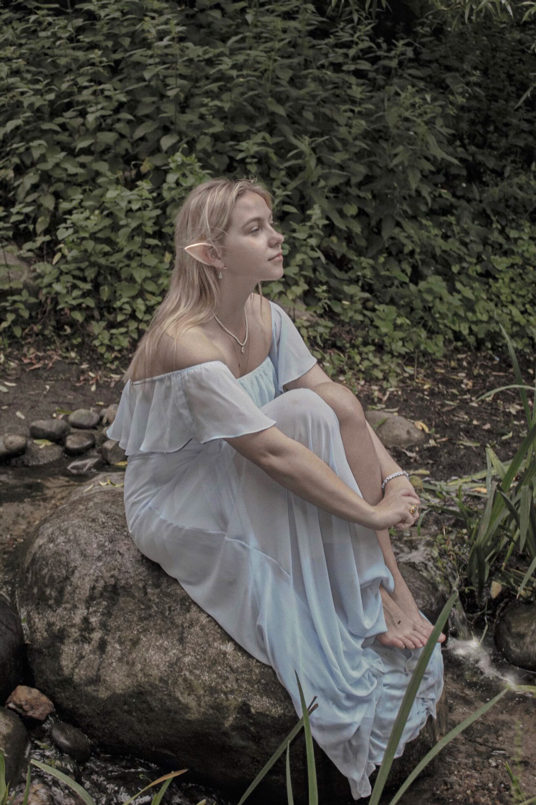
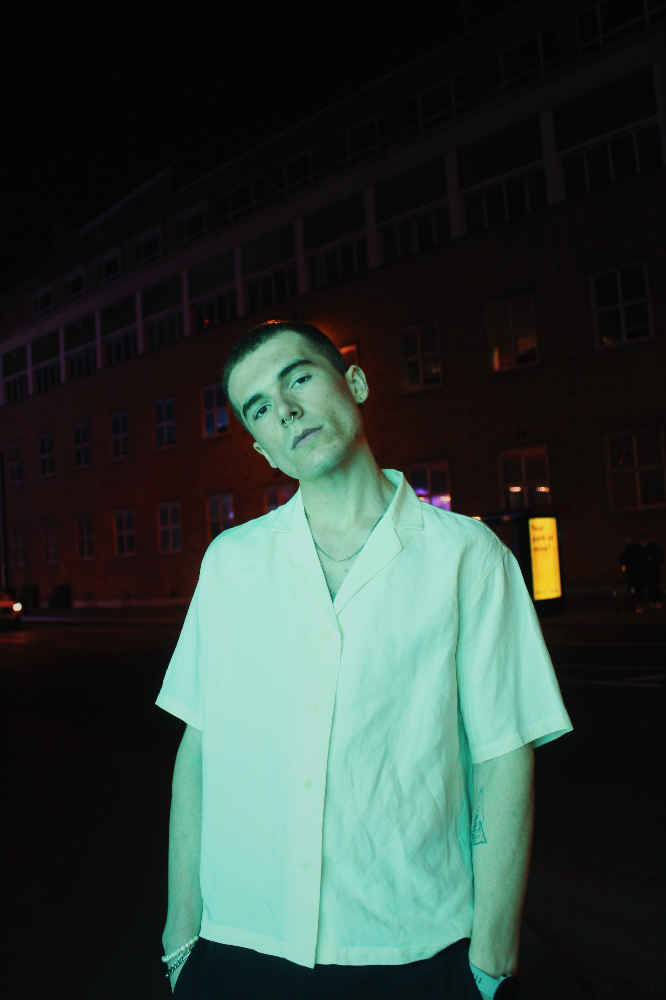
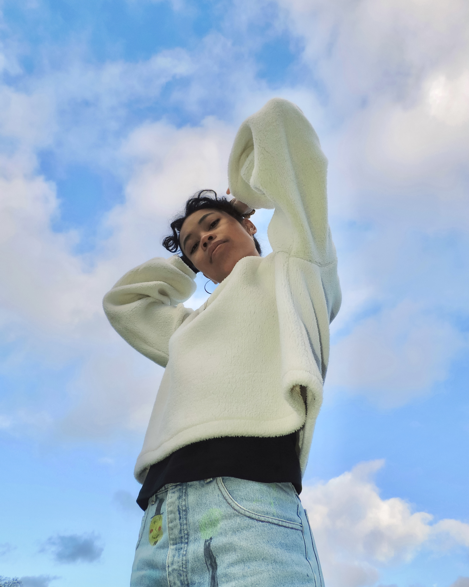

MIRROR BETWEEN US
This series connects people and places through reflection.

This series connects people and places through reflection.
What Colour is Nude? is an artistic response to systemic racism and the divisions it creates. Having grown up in a predominantly white town, I was largely sheltered from the inequalities that many people of colour navigate daily. It was only with age that a realisation struck me, plasters were never designed with my skin in mind. In this image, the plaster becomes a symbol of that broader erasure. It raises a question why is "nude" a single colour, and whose skin does it actually represent?

A collection of my favourite moments captured on film




